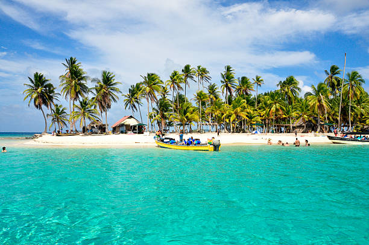

San Andres
San Andres es un destino paradisíaco con hermosas playas de arena blanca y aguas cristalinas.
San Andres es un destino paradisíaco con hermosas playas de arena blanca y aguas cristalinas.
Sin duda alguna, Leticia es un destino que ofrece experiencias verdaderamente inspiradoras mediante el contacto con la naturaleza y las culturas indígenas ancestrales. Por eso, lo que tienes que hacer en Leticia es disfrutar de estas dos grandes riquezas. Para empezar, puedes dirigirte al muelle turístico de Leticia, donde se encuentra la línea imaginaria que divide el Amazonas en tres países (Colombia, Brasil y Perú), y en el que hallarás lanchas que te conducirán a distintos lugares para apreciar la naturaleza y tener contacto con distintas comunidades indígenas. Una gran opción para disfrutar de la flora y la fauna maravillosas de la región es visitar parques y reservas naturales como Amacayacu, Chiribiquete y Nukak. No en vano, esta región es considerada como una de las mejores del mundo para sorprenderse con especies animales y vegetales. Por eso, en tus travesías encontrarás maravillas naturales como los lotos más grandes del mundo, que flotan en la superficie calma de los lagos. Hallarás también especies animales exóticas, como las guacamayas, los gallitos de las rocas, los zopilotes, las ranas de cristal y los caimanes negros. Además, el río ofrece un auténtico espectáculo con los singulares delfines rosados que surcan las aguas del Amazonas. También vale la pena sorprenderse con la gran variedad de primates que hay en la zona. Pero, además de diversidad natural, el Amazonas alberga una enorme riqueza cultural. Allí, encontrarás comunidades indígenas como la HITOMA, la YAGUA, la MACEDONIA y la TACANA, con las que podrás interactuar y de las cuales podrás conocer su rica cultura y su interesante visión del mundo.
Santa Marta, es un distrito de Colombia, capital del departamento de Magdalena. Fue fundada el 29 de julio de 1525 por el español Rodrigo de Bastidas, lo que, según los textos, la convierte en la ciudad en pie más antigua de Colombia. Se encuentra a orillas de la bahía del mismo nombre. Desde 1991 fue organizada constitucionalmente como Distrito Turístico, Cultural e Histórico. Es conocida por sus actividades turísticas, la historia de sus calles y sus playas. El balneario El Rodadero es uno de los principales destinos del Caribe colombiano. Su casco urbano se encuentra entre la Sierra Nevada de Santa Marta y el mar Caribe y el parque Tayrona se encuentra bajo su jurisdicción. Entre sus atracciones culturales e históricas están la Casa de la Aduana, la Catedral Basílica, la Biblioteca Banco de la República, el Seminario San Juan Nepomuceno, el Paseo Bastidas, la Quinta de San Pedro Alejandrino, la plaza de Bolívar y el parque Los Novios. Su núcleo más poblado y de mayor actividad comercial es la zona central, desde donde se desarrolló la ciudad a partir del siglo XVII. El plano comprendido entre la carrera Primera y las avenidas Santa Rita y del Ferrocarril enmarca su centro histórico y su núcleo comercial, encontrándose además su núcleo de turismo de playa en la zona de El Rodadero. La ciudad además es conocida por haber sido el lugar en el que Simón Bolívar falleció en 1830 en una hacienda de nombre Quinta de San Pedro Alejandrino que en esa época se encontraba a las afueras de la ciudad de Santa Marta.